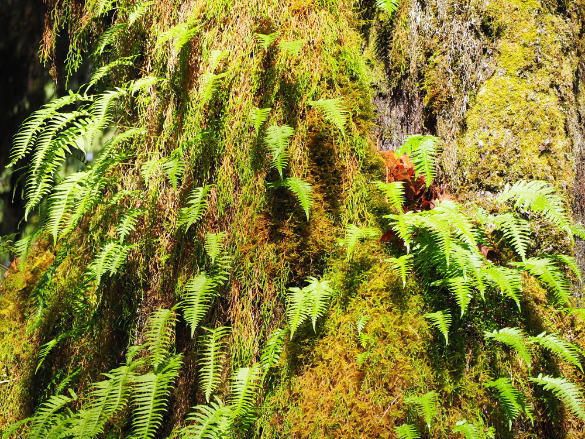

Stand still long enough in the Hoh Rain Forest and you begin to notice how much of what you hear is not falling rain at all. It is the sound rain makes after it has already arrived: water moving through layers of moss, slipping from one leaf to another, traveling along a branch and finally letting go.
In a forest that receives an average of about 140 inches of precipitation a year, rain is not simply weather. It is an architect. It shapes the height of the trees, the weight of the moss, the color of the river, and the pace at which fallen wood becomes new life.
A few miles into that wet green world, another idea has been placed on a moss-covered log: a small red stone marking One Square Inch of Silence, an independent experiment in protecting natural quiet. The contrast is almost too perfect. Twelve feet of rain. One square inch of silence. Both turn out to be much larger than they sound.
A Quick Sense of Scale
The Hoh lies on the western side of Olympic National Park, on Washington State's Olympic Peninsula, about two hours by road from Port Angeles and less than an hour from the town of Forks. The protected rainforest covers roughly 24 square miles of low-elevation forest along the Hoh River.
It is one surviving piece of a temperate-rainforest belt that once extended along the Pacific coast from southeastern Alaska to central California. Much of that wider belt was altered by logging and development. Inside Olympic National Park, ancient forest remains protected, and the Hoh is regarded by the National Park Service as one of the finest surviving examples of temperate rainforest in the United States.[1]
The Rain Itself
The number explains almost everything: around 140 inches, or nearly twelve feet, of precipitation in an average year. Most of it arrives during the cooler months, when Pacific storm systems move inland and rise against the Olympic Mountains. As the air climbs, it cools and releases moisture over the western valleys.[1]
Summer can be surprisingly dry. That seasonal contrast matters. The forest is built by immense winter rainfall, yet its rivers and wildlife also depend on snow and glacier melt during the driest weeks of the year. The Hoh is not wet in one simple, permanent way. It moves between saturation and shortage, abundance and dependence.
One Square Inch of Silence
On Earth Day in 2005, acoustic ecologist Gordon Hempton placed a small red-colored stone on a moss-covered log about 3.2 miles along the Hoh River Trail. He called the place One Square Inch of Silence.[2]
The project was never an official National Park Service designation, and the claim that it was the quietest place in the United States came from Hempton's own acoustic work. But the idea behind it was powerful: if a single aircraft can spread noise across many square miles, then protecting one tiny point from mechanical sound may require protecting the much larger soundscape around it.
Natural quiet does not mean an absence of sound. In the Hoh it can include river water, elk calls, wind moving through spruce, the drip of moss and the almost continuous soft labor of decomposition. The project asked visitors to distinguish those sounds from engines and aircraft, and to recognize quiet as an ecological condition rather than an empty space.
According to the project's own account, One Square Inch was actively defended from 2005 to 2018. Commercial airlines sometimes cooperated with requests to avoid the area. Later, increased military training flights by EA-18G Growler aircraft became a new challenge to the soundscape. The conflict left no stump, road or visible scar. It arrived as sound, passed overhead and disappeared while changing the experience of the forest below.[2]
Moss, Giants, and Nurse Logs
What all that water makes possible is scale. Sitka spruce, western hemlock, Douglas-fir, western redcedar and bigleaf maple rise through the Hoh's layered canopy. Along the Hall of Mosses Trail, maples carry curtains of club moss while ferns occupy nearly every available opening below.[1]
The forest's most revealing structures are sometimes the ones that have fallen. A downed tree becomes a nurse log, holding moisture and nutrients while seedlings take root along its length. Decades later, the log may have almost vanished, but a straight row of mature trees can remain—a living outline of the trunk that once supported them.
In many forests, death is treated as an ending or a loss of usable material. In the Hoh, a fallen tree becomes habitat, soil, shelter and succession. The forest keeps the evidence of what it has absorbed.

Elk, Slugs, and Other Forest Lives
Roosevelt elk are among the Hoh's most visible residents. Olympic National Park protects the largest fully wild herd of Roosevelt elk in the Pacific Northwest, and the Hoh Rain Forest is one of the best places in the park to see them. The lowland herds remain in the area throughout the year, feeding on ferns, shrubs and lichens beneath the canopy.[3]
Black bears, river otters, bobcats and mountain lions also inhabit the wider forest. Northern spotted owls depend on the old-growth habitat above, while banana slugs move through the wet litter below. The scale of life ranges from animals large enough to part the undergrowth to decomposers working almost invisibly beneath it.[1]
Fishers, cat-sized members of the weasel family, returned through one of the park's major restoration projects. Ninety animals from British Columbia were released between 2008 and 2010. Later monitoring documented established home ranges and several generations of descendants across the Olympic Peninsula.[4]
A River Made of Ice
The Hoh River runs from Mount Olympus toward the Pacific, carrying the forest's name and much of its character. At times its water takes on a pale blue-gray color from glacial flour—rock ground into fine powder by moving ice.
The Hoh River Trail follows the watershed deep into the park. At 18.5 miles from the trailhead, it reaches the Blue Glacier moraine beneath Mount Olympus. Blue Glacier is 2.6 miles long and one of Olympic National Park's largest glaciers.[1][5]
The ice is shrinking. Olympic National Park counted 266 glaciers in 1982 and 184 in 2009. Over roughly the same period, researchers measured a 34 percent loss of glacier surface area. Blue Glacier's lower end retreated by about 325 feet between 1995 and 2006, while measurements also recorded substantial thinning.[5]
That loss reaches far beyond mountain scenery. In the Olympic Mountains, glacier melt helps sustain summer river flows during the season when rainfall is comparatively low. Cold water supports salmon, other aquatic life, and the communities connected to glacial rivers. A smaller reservoir of ice changes the timing and temperature of water far downstream.
The People Who Were Here First
The valley's human history is far older than the national park. The Hoh people call themselves Chalat', Those-Who-Live-on-the-Hoh. Their name for the river, chalak'At'sit, means “the southern river.” The river is central to Hoh identity, history and traditional economic life.[6]
Hoh oral history tells of K'wati, the shape-shifting Changer, who found the first people of the river walking upside down on their hands. He set them upright and taught them to use their hands to catch smelt. Hoh elders have therefore sometimes referred to themselves as the “Upside down people.”[6]
The Hoh Reservation was established by executive order in 1893 and originally comprised 443 acres near the river's mouth. Today the Hoh Tribe describes its work in terms of sovereignty, treaty rights, cultural continuity and the stewardship of natural resources. The river is not simply a landscape beside the community. It is part of the community's name, memory and continuing responsibility.
How a Forest Gets Protected
Protection came in stages. In 1909, President Theodore Roosevelt redesignated part of the Olympic Forest Reserve as Mount Olympus National Monument, in part to preserve habitat for the region's elk. In 1938, President Franklin D. Roosevelt signed the act creating Olympic National Park.[3]
The park later received international recognition and was inscribed as a UNESCO World Heritage Site in 1981. Its significance lies not only in spectacular scenery but in the continuity of ecosystems stretching from ocean coast and temperate rainforest to alpine meadows and glaciated peaks.[7]
Protection, however, is not a single historical decision that remains effective forever. It is a continuing system of monitoring, funding, tribal stewardship, scientific research, public restraint and maintenance. The Hoh survives through laws and boundaries, but also through ordinary decisions repeated year after year.
A Road Washed Away
In December 2024, heavy rainfall washed out part of Upper Hoh Road, the only vehicular route to the visitor center, trailheads and campground. Jefferson County owns and maintains the road even though its primary purpose is to provide access to federal parkland.[8]
The closure continued into spring 2025. The stakes were larger than a damaged strip of pavement: the Hoh district had received nearly 460,000 visitors in 2024, and local businesses depend heavily on access to the forest.[8]
Washington State approved $623,000 from its Economic Development Strategic Reserve Account for repairs, while individuals and businesses committed more than $27,000 in private contributions. The road reopened on 8 May 2025.[8][9]
The episode made the forest's modern dependencies unusually visible. A place shaped over millennia by rain, ice and slow decay could still be placed beyond public reach by one failed road. Its ancient trees did not make its infrastructure ancient, resilient or automatic.
What the Quiet Makes Possible
The Hoh does not feel fragile when you stand beneath towering spruce and hemlock with moss dripping onto your shoulders. It feels excessive, self-renewing and older than the systems that surround it.
Yet almost everything that keeps it recognizably itself is vulnerable to the present: cold water stored in shrinking ice, old-growth habitat that cannot be replaced quickly, roads exposed to heavier rain, soundscapes crossed by aircraft, and a river whose future is inseparable from the people who have lived beside it for generations.
That may be what the square inch is really for. Not silence as emptiness, and not the fantasy of a forest untouched by human life, but a small point of attention. A place to listen long enough to understand that an ancient landscape can still depend on decisions being made now.
Inspired by the Hoh Rain Forest
The quiet beauty of the Hoh Rain Forest also inspired a pair of notebooks created by Vyora Studio—spaces for observations, reflections, sketches and ideas drawn from the natural world.
SOURCES & IMAGE CREDIT
- National Park Service - Visiting the Hoh Rain Forest
- One Square Inch of Silence - Project history and location
- National Park Service - Roosevelt Elk
- National Park Service - Fisher Reintroduction
- National Park Service - Glaciers and Climate Change
- Hoh Tribe - History and Origin of the Hoh Tribe
- UNESCO World Heritage Centre - Olympic National Park
- Office of the Governor of Washington - Funding to reopen Hoh Rain Forest access
- Axios Seattle - Hoh Rain Forest access restored on 8 May 2025
Read Next
Read Next

The Ocean’s Own Mandala Makers
A single-celled creature too small to notice in open water has been building radial geometry long before humans gave such patterns names.
Radiolarians are single-celled ocean organisms that build intricate silica skeletons—tiny natural geometries hidden beneath the waves.
Read story →
The Kākāpō — A Parrot Unlike Any Other
New Zealand’s moonlit, flightless, remarkably heavy parrot — and the patient work of bringing it back from the edge of extinction
On Whenua Hou, the night carries a deep, resonant boom—the courtship call of one of the world’s rarest and most unusual parrots.
Read story →